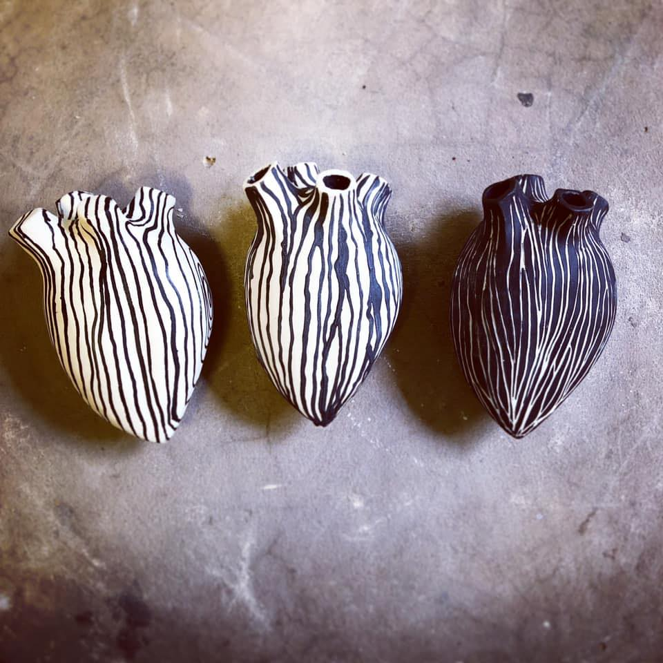

Sandra Borg
Lista kona
Skoðaðu lista verkin í gegnum síman.
Sandra vinnur aðallega með leir og postulín bæði skúlptúra, nytjahluti og eitthvað sem er á mörkum þess að vera nytjahlutur eða skúlptúr

Hvernig get ég notað þetta app?
Þegar þú smellir á takkan upp "App" þá er þér beint á sýðu sem leyfir þér að skanna inn merkið hér fyrir neðan. þú einfaldlega beinr símanum að merkinu og hjartast myndast